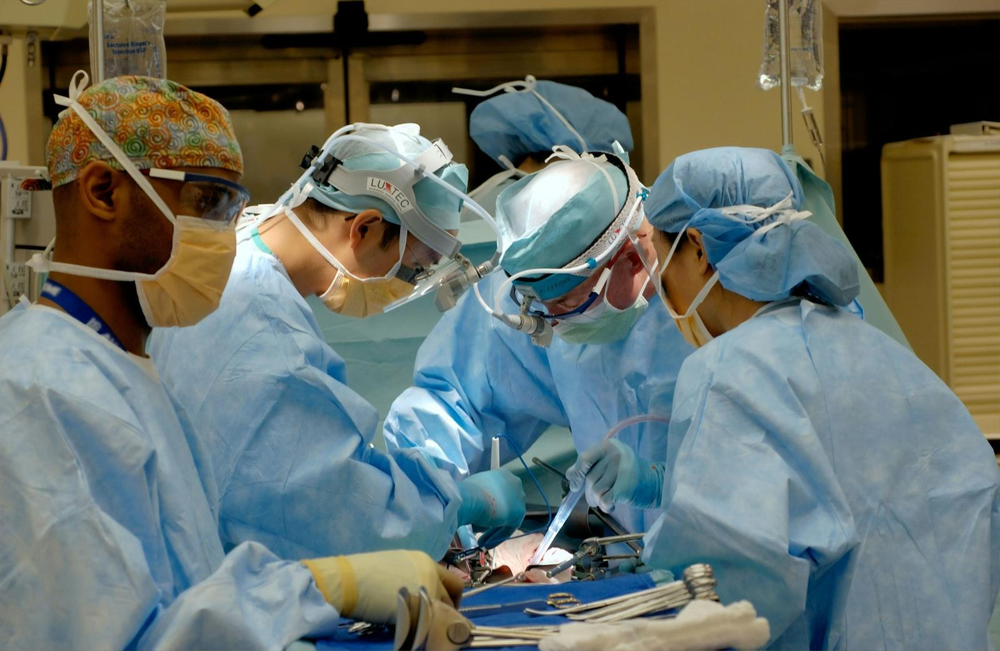
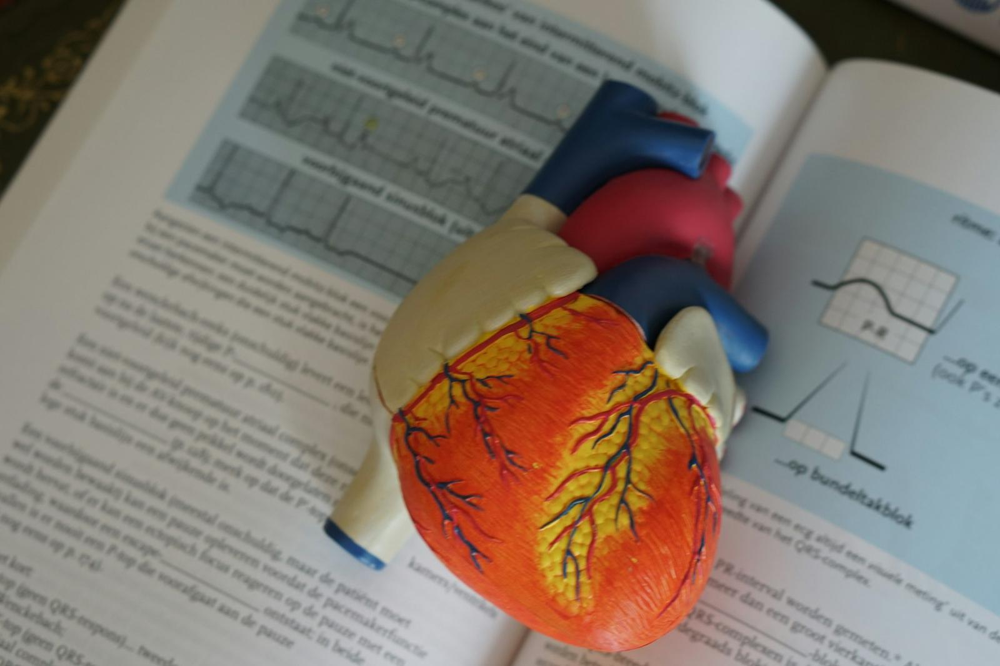
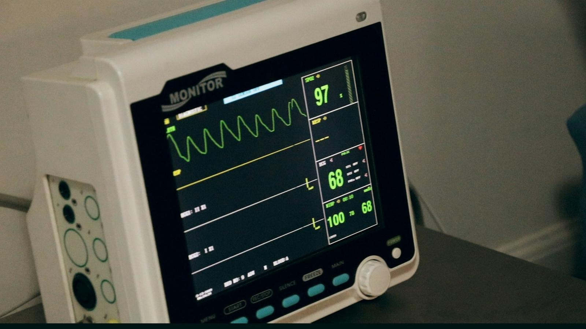

Home / Expertise
Treatments and procedures
From the consulting room to the cath lab — what Dr Dhall treats, and what to expect at each step.
Clinical cardiology
Most heart problems are diagnosed and managed in the consulting room. This is where Dr Dhall spends most of his time.
Chest pain and angina
Working out whether chest discomfort comes from the heart, and how serious it is.
- Often for
- Discomfort on effort, abnormal ECG or TMT, strong family history.
- What to expect
- Consultation, ECG, then the right test — not every test.
High blood pressure
Confirming the diagnosis properly and finding the simplest effective treatment.
- Often for
- Raised readings at home or at a pharmacy; headaches; kidney disease.
- What to expect
- Home or 24-hour monitoring, then a treatment plan.
Cholesterol, Lp(a) and lipid disorders
Dr Dhall teaches and speaks on lipidology and sets targets matched to your risk.
- Often for
- High LDL, family history, previous heart attack or stent.
- What to expect
- Risk score, targets, medicines including newer options.
Heart failure
Modern medicines and devices that help people live longer and better.
- Often for
- Breathlessness, swollen ankles, a weak heart on echo.
- What to expect
- Echo, NT-proBNP, the four-pillar medicines, device assessment.
Palpitations, fainting and rhythm problems
Finding the rhythm behind the symptom.
- Often for
- Racing or irregular heartbeat, blackouts, dizziness.
- What to expect
- ECG, Holter or event recorder, then treatment or reassurance.
Pre-operative heart check
Making non-cardiac surgery safer for people with heart risk.
- Often for
- Planned surgery with diabetes, heart disease or age over 60.
- What to expect
- Assessment and written advice for your surgeon and anaesthetist.
Coronary interventions
Dr Dhall has performed and taught angioplasty for over 25 years, and set up the first cath lab at the Army Hospital (R&R).

Coronary angiography
Imaging the heart arteries through the wrist to find narrowings.
- Often for
- Angina, abnormal stress test, after a heart attack.
- What to expect
- Day-care procedure under local anaesthetic.
Angioplasty and stenting
Opening blocked arteries with a balloon and a drug-eluting stent.
- Often for
- Significant blockages causing symptoms or risk.
- What to expect
- Usually through the wrist; home in 1–2 days.
Primary angioplasty for heart attack
Opening the blocked artery as an emergency. Dr Dhall has set up 24×7 programmes at several hospitals.
- Often for
- An ongoing heart attack (STEMI).
- What to expect
- Done at the nearest hospital with a cath lab.
Chronic total occlusion (CTO)
Specialised techniques to reopen arteries blocked for months.
- Often for
- Persistent angina with a completely blocked artery.
- What to expect
- Planned procedure; may take longer than routine angioplasty.
Left main and bifurcation stenting
Treating blockages at critical branch points.
- Often for
- Complex anatomy where both stents and surgery are options.
- What to expect
- Heart-team decision; imaging-guided.
Calcified arteries — rotational atherectomy
A tiny diamond-tipped burr prepares rock-hard plaque so a stent can expand fully.
- Often for
- Heavily calcified blockages.
- What to expect
- Done together with angioplasty.
Intravascular imaging and physiology
IVUS, OCT and pressure-wire (FFR) measurements guide better decisions.
- Often for
- Borderline narrowings; optimising stent results.
- What to expect
- Added during angiography.
Carotid, peripheral and aortic interventions
Endovascular treatment for arteries outside the heart — an area Dr Dhall has proctored and taught for years.

Carotid angioplasty and stenting
Treating narrowed neck arteries to lower stroke risk.
- Often for
- Significant carotid narrowing, especially after a mini-stroke.
- What to expect
- Planned procedure with brain protection devices.
Peripheral angioplasty
Opening narrowed leg arteries to relieve pain and save limbs.
- Often for
- Calf pain on walking, non-healing wounds.
- What to expect
- Doppler or CT angiography first.
Renal artery angioplasty
Treating narrowed kidney arteries in selected patients.
- Often for
- Hard-to-control blood pressure with proven narrowing.
- What to expect
- Careful selection — not everyone benefits.
Aortic aneurysm and dissection repair (EVAR / TEVAR)
Stent grafts placed from the groin to reline a weakened aorta.
- Often for
- Large or growing aneurysm; some dissections.
- What to expect
- Done with a vascular team.
Structural and congenital heart procedures
Catheter treatments for valves and holes in the heart, without opening the chest.

Balloon mitral valvuloplasty
Widening a narrowed mitral valve, often from rheumatic fever.
- Often for
- Symptomatic mitral stenosis with a suitable valve.
- What to expect
- Through a vein in the groin.
Device closure of ASD, VSD and PDA
Closing holes in the heart with a folding device.
- Often for
- Suitable congenital defects in children and adults.
- What to expect
- Usually home in a day or two.
Valve disease assessment and TAVI guidance
Timing valve treatment well and choosing between surgery and catheter valves.
- Often for
- Narrowed or leaking valves.
- What to expect
- Regular echo, heart-team discussion.
Pacing, devices and electrophysiology
Dr Dhall organised India's first national course on cardiac pacing and electrophysiology (2008) and proctors CRT implantation.

Pacemaker implantation
Keeping a slow heart beating at the right rate.
- Often for
- Heart block, sick sinus syndrome.
- What to expect
- Day-care or overnight procedure.
ICD implantation
A device that detects and treats dangerous rhythms.
- Often for
- Cardiac arrest survivors; weak hearts at high risk.
- What to expect
- Overnight stay; regular device checks.
Cardiac resynchronisation therapy (CRT)
A special pacemaker that helps a weak heart beat in step.
- Often for
- Heart failure with a wide QRS on ECG.
- What to expect
- Can improve symptoms and survival.
Ablation and cardioversion
Treating SVT, flutter and AF with catheters or a timed shock.
- Often for
- Recurrent or troublesome rhythm problems.
- What to expect
- Arranged with an electrophysiology team where needed.
Preventive cardiology
Most heart attacks are preventable. Dr Dhall has a long-standing interest in prevention and lipidology, and has run around 200 free heart camps.
Heart risk review
Understanding your real risk and what to do about it.
- Often for
- Family history, diabetes, high BP or cholesterol, smokers.
- What to expect
- Risk score, targeted tests, personal targets.
Lipid clinic
Advanced cholesterol management, including Lp(a) and newer medicines.
- Often for
- High LDL, statin side effects, events despite treatment.
- What to expect
- Tailored treatment and regular review.
Healthy heart programme for families
Practical changes to food, activity, sleep and stress.
- Often for
- Anyone wanting to lower their risk.
- What to expect
- Follow-up to keep you on track.
Procedures are done at accredited hospitals with 24×7 cath labs in Delhi NCR.Dr Dhall discusses the hospital, the plan and the expected costs with you before any procedure — and sees you again afterwards at the clinic.
The Heart Clinic, Gurugram
Questions about your heart? Start with a conversation.
Book a clinic visit in Gurugram or a video consultation from anywhere. Bring your reports — Dr Dhall will go through them with you, in English or Hindi.